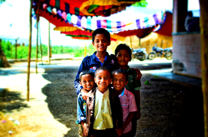
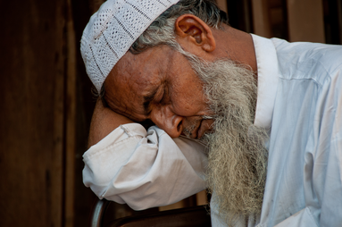
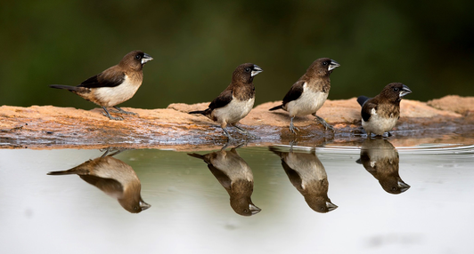
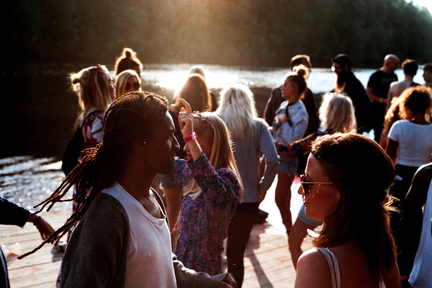

Nature, in its expanded sense, is the natural, physical, or material world or universe. "Nature" is often refers to the phenomena in the physical world, and also life in general. The study of nature is a large part of science. Although humans are part of nature, human activity is often understood as a separate category from other natural phenomena. Nature is the most fascinating experience I've had the honor and pleasure of noticing in this lifetime. It has rendered me speechless; awed; excited and mesmerized by its naturally occuring organic beauty. There was a time in my life that It was virtually impossible to notice Nature as she unfurled; and equally infeasible to stop and smell life's roses. I'm learning more and more about going slow and what kinds of joy emerges in nature as a result. Nature manifests 24/7 rich in every aspect. I've come to adore her and am interested to witness more and more of her majesty. When I think about the goodness in Nature, here's where I go in my mind...
 I distinctly recall witnessing unstoppable laughter from a young person over three decades ago that influenced my choice of being an ally to this population. I was intentionally looking for folks I might possibly make a difference with and the soulful sound coupled with full-out facial self expression leaped for joy within and won my heart over. 'Til this day I stand as ally with sincere pledge of allegiance to young people, no matter what, in any way I can!! It has also been my absolute honor and divine joy to meet up with some of the most refreshing and enriching youths walking the Earth at the same time on this journey!! When I think about the goodness in Young People, here's where I go in my mind...
 In 1996 i began volunteering at a senior organization exclusively dedicated to serving the needs of elder people of color. Most of the members reside in New York’s metropolitan area, though other senior members have relocated throughout the country. Nearly all members are from modest-to-low income households; more than 50% are retired; and about 90% identify as black, African American or Caribbean American. I was available to provide emotional support and assist in srtucturing quality programming that affirm the lives of this often invisible and marginalized population. Especially the Woodcarving class that was offered. We'd gather weekly and creative elixir would fly...!!! As an ally I committed to honoring and preserving our histories and traditions while reuniting those parts of our selves that have been fragmented by racism and societal ill. We maintain a space, free of discrimination based on age, gender, race, sexuality, spirituality, and ethnic origin. Everyone is welcome. Since I was basically the youngest memeber in the oraganization during my service years, I was asked to be the designated drivers when evnts took place and elders wanted to be safe when drinking. They treated me with such kindness and adoration that it moved me to be there and close in ways I'd never reached with elders in my own family. Truly precious and priceless times. When I think about the goodness in Elders, here's where I go in my mind...
 When many of my freinds through the years speak of pets they are mostly engaged in conversations about dogs, many cats, an iguana here and there, hamsters, a few snakes and so on. Our family pet growing up was a Myna Bird! My father ordered it from India and had it delivered to a pet shop on his route as NYPD law enforcement. I remember my sister and I being very excited to see the surprise in that gigantic box Zee came home in. We fed Zee dog food (gaines meal) that what he liked. He was a fiesty ole bird; if you got too close to his cage he would peck with his beek and we basically stayed clear of him except for when we wanted to show him off and encouraged him to speak or whistle. He loved our mother as if she was his mother. We had a double sink in our kitchen and my Mom would put Zee in one side cover it for his bath. He'd be there all quiet in the dark probably and until my Mom would say "bathe Zee" and then he'd begin splashing all around like he understood english. Or she'd tell him "Whistle Zee" she'd whistle a tune and he"d follow along... Zee was funaaaaaay and a fabulous pet to grow up with.
 In the Underground House Music Community (House Heads Abound) it's stated adamantly, and particularly expressed "House is a feeling, and if you aint feeling the music, then it aint House!!!" I bear witness to that statement with my whole life. Whenever I need redemption, baptizing and stretching out my faith hands to godIs of my own uderstanding, I take my life to the dance floor and "I Get Lifted (Barbara Tucker)." I was introduced to "House Music" genre by my sister Veron. She systematically built an album collection (12" vinyls) that was to live for. My sister was an amazing dancer, she could Hustle (dance) like no tomorrow. Her dance partners would spin her around for long periods of time and she would always return on the right foot; it was mesmerizing to witness. My favorite style of dance via House Music is Free Style. Free Style is when you dance to House Music creating your own flavor and perform to the max your own dance brand. Sometimes I've come to the dance floor maybe to work out something going on within and have had to dance and sweat really hard 'til whatever it is has passed on to its resting place. I love dancing to House Music by myself on the dance floor. Theres no competing; Theres no bumping into other folks; Theres nothing but myself, godIs and the dj. House Music gives me life! There have even been times where Ive been asked to dance as a partner during the night, I just, I mean I may dance a few songs with others, but not all night. Thats not my dance style. I love it when its just me, godIs and the dj having their way with the House Music vibrations.
{kind=link}
{kind=link}
{kind=link}
{kind=link}
{kind=link}